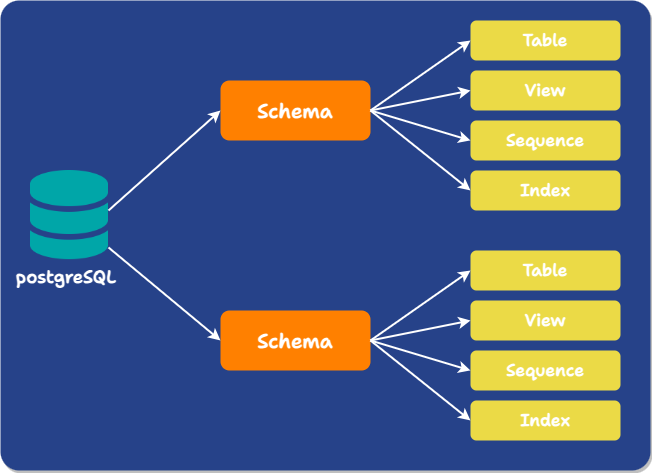

Case Study

1) Introduction
1.1) Overview of Laridae
Laridae enables reversible, zero-downtime schema migrations in PostgreSQL, synchronizing them with application code deployments for apps using AWS Fargate. It allows application instances expecting the pre-migration and post-migration schema to use the same database simultaneously without requiring changes to either version's code. Additionally, recent schema migrations can be reversed without data loss. This is accomplished with minimal interference with usual reads and writes to the database.
Laridae integrates this schema migration functionality into a deployment pipeline hosted on GitHub Actions. It creates the necessary infrastructure inside users’ AWS accounts, allowing GitHub Actions to communicate securely with your private PostgreSQL database and coordinates schema changes with code deployments.
1.2) The Big Picture Problem
Before deep diving into the rest of this write-up, we’ll set the stage by explaining what motivated the development of Laridae.
If we radically simplify an application - any application - we are left with two crucial components: the Application Code, and the Database. As the application grows, maintenance of the code base needs to be accompanied with updates to the corresponding database.
This raises an interesting problem: How do we ensure that database and application code changes occur harmoniously?
Consider this example:
-
Our current application stores data in a PostgreSQL server. The application reads customers’ phone numbers from a table called phones, which stores phone numbers as type char(10), meaning each number is a string of strictly 10 characters.
-
Though all the phone numbers were initially from the US, a need eventually arose to allow phone numbers from other countries, meaning we needed to include the country code in our stored phone numbers. We could update our phone column to the type of char(11) manually - making each number a string of strictly 11 characters (the original 10 + country code of (1) for the USA). However, our original application code expects a string without a country code and may rely on this assumption, for instance, by assuming that the first three digits are the phone number’s area code. Yes, a single character addition to a single field in a table might be enough to unravel everything. In the best case scenario, the application gets confused and does nothing. Worst case scenario, the application breaks.
-
That obviously sounds bad. We consider updating the application code first: We change the application to expect a string with a country code instead. Still, the database has not been updated to store char(11) phone numbers. Again, this could break the application.
Laridae was created to ensure this updating process happens seamlessly and, most importantly, at no availability cost to the application. This means no scheduled maintenance downtime. Laridae allows different versions of the application code to work on the same database simultaneously. Furthermore, Laridae automates the deployment of database changes and application code changes in the correct order.
In the rest of this paper, we explain how this is accomplished.
1.3) Use Case
Currently, Laridae supports deployments that:
-
Have the codebase maintained in a GitHub repository.
-
Have an application hosted on AWS Fargate.
-
Use a PostgreSQL database, which could be AWS RDS or others.
-
Are performing one of the following schema migrations:
-
Add new column
-
Add an index to a column
-
Rename a column
-
Add a not null, unique, foreign key, or check constraint to a column
-
Drop a column
-
Change a column’s data type
-
2) Problem Domain
2.1) Why make schema changes
Schema changes are changes to the structure of the database, such as adding a column to a table, changing the datatype of a column in a table, adding a new table to the database, etc.
There are many cases where a schema change is necessary, including the following:
-
New Features: Adding or adjusting features in a new version of an application often requires database schema changes. For example, new data types must be stored, columns must be added, or constraints must be adjusted.
-
Normalization: Normalization helps reduce redundancy and prevent data anomalies. It requires schema changes like adding Foreign Keys and separating large denormalized tables into smaller, more focused tables.
-
Tuning Queries: Schema changes such as refining database indexes or denormalizing to avoid JOINs for common queries can increase query efficiency.
Schema changes often impact the existing data. Data Propagation is the process of transforming data from the old schema to fit the new one.
2.2) Schema Migration Challenges
Implementing changes to applications with databases involves several challenges:
-
Compatibility: As we saw in the above example, throughout the entire migration process, both the database and the application code, whichever version, must align with each other's expectations. For example, suppose one version of the application code is written, assuming the database has a column with a particular data type. Whenever it’s deployed, the database needs to have that column. Conversely, if one column in the database has a specific constraint, any version of the app that writes to that column must respect that constraint or handle the error that occurs when it is violated. It's crucial to ensure that changes in either the app or database do not break the functionality of the other.
-
Reversibility: In the event of an issue during the migration process, the ability to revert to a prior functional state of data and code is essential.
-
Availability: A schema migration should avoid disrupting reads and writes from the application. The gold standard is a zero-downtime migration: one without app interference. This is usually not strictly possible in practice, but interference can still be minimized.
-
Standardized workflow: By default, schema changes are handled as one-off alterations applied manually to the database. This means they may require intervention from dev ops personnel, be challenging to synchronize with code deployments, especially automatic ones, and leave no record.

3) Schema Migration Strategies
3.1) Big Bang
When faced with the need to implement database schema migrations, an obvious first approach is to use what is known as a Big Bang strategy: A Big Bang migration consists of taking the application down, performing the schema migration, updating the application during downtime, and then deploying the new version of the application.
This approach increases the risk of failure: if the new application has a problem, there is often no way to restore the original version of the database beyond relying on snapshots or backups, either throwing out writes that occurred since the migration or applying them manually.
Furthermore, and most significantly, it requires significant downtime.
The Big Bang strategy only addresses one of the challenges associated with database schema changes: compatibility. Temporarily bringing down the application before migration and bringing up the new version only after the migration is complete ensures constant compatibility between the running code and the existing database. However, the cost is enormous, sacrificing availability, and the process is entirely manual.
The Big Bang strategy leaves a lot to be desired. However, there are other solutions that seek to mitigate database schema migration challenges. Three common approaches are Schema Versioning, Online Schema Changes, and the Expand-and-Contract pattern.
3.2) Schema Versioning
Schema versioning tools likeFlyway, Liquibase, and Squitch require the user to create, for each migration, a migration script that specifies the schema change and how the relevant data should be transformed to fit in the new schema (for instance, when performing a migration which adds a constraint to a column, part of the migration script specifies what to do with data in that column that doesn't fit the constraint). The tools then modify the database based on that script.
The migration scripts are assigned versions and stored, providing a historical view of the database schema as it moves through time. This permits schema changes to be easily applied to another instance of the database, like one used for production. It also allows the database schema to be rolled back to an earlier version later, providing reversibility.
Still, after destructive operations like dropping columns, there is no means of restoring the lost data. This style of tool also does not address the challenges of making the code and database compatible, coordinating code and schema changes, or avoiding interference with usual reads and writes.
3.3) Online schema change
Online schema change tools modify a database schema without interrupting the database's regular operation by running a migration through simulation:
-
First, a ghost table is created. This a new, empty table with the same schema as the original table.
-
The ghost table is populated with original data via backfilling.
-
The migration happens on the ghost table. As part of the migration process, any newly written data from traffic is propagated to the ghost table.
-
Once the migration is complete, the original table is swapped with the ghost table.
This process allows the database to remain operational without interrupting users, addressing the availability challenge. Tools such as PlanetScale and gh-ost utilize this strategy.
However, in addition to this strategy potentially taking a long time to complete, since the entire table must be recreated elsewhere, it only partially addresses the reversibility challenge. These tools only provide reversibility for a brief time frame immediately following the completion of the migration. During that window, the original table continues to be updated to facilitate quickly switching back to it if something goes wrong.
This strategy also doesn’t provide a way to address the compatibility challenges associated with schema migrations. There is a clear “breakpoint” when the database switches to the new version. The application code needs to handle this abrupt change of data. Either:
-
Option 1: The new application version needs to be deployed at exactly that break point moment so that the correct application version can receive the database. This is not possible if the app has constant traffic.
-
Option 2: The application code must be written to handle both database versions simultaneously.
Regardless of which option is used, this places the burden of compatibility squarely on the application developers.
3.4) Expand-and-Contract
The Expand-and-Contract pattern, in essence, consists of three steps:
-
Expand: The database is modified to tolerate old and new application versions.
-
Deploy: All the application instances are (over time) switched to the new version.
-
Contract: The database is modified to work with only the new version of the application.
After the Expand phase, the database can work with both new and old application code versions. As such, Expand-and-Contract handles Rolling Back seamlessly: should an issue (such as a security or functionality bug) occur, the old application code version can be deployed immediately without causing breaking changes.
To apply to the example laid out earlier (switching phone numbers from char(10) to char(11)), the process would play out roughly as follows:
-
Expand: A new phone column is added to the existing table, with the data type of char(11).
-
Deploy: A new version of the application code, which requires 11-digit phone numbers, can be rolled out on the application server clusters. This application version can use the new column for its functionality. Any instance of the application cluster running the old version can still safely use the old column with the 10-digit phone numbers.
-
Contract: When all the application instances are running the new code, the old phone column can be safely dropped from the table without affecting application availability.
-
Rollback: After the Deploy step but before the Contract step, if we decide to stick with 10-digit phone numbers, the old version of the application can be re-deployed, and it should still work.
Tools like pgroll and Reshape help automate the Expand-and-Contract process. The core functionality of Laridae is similar to these tools, but it has significant differences we will explain in time. In the following few sections, we explore some of the trade-offs of Expand-and-Contract.
3.4.1) Advantages of Expand-and-Contract
Expand-and-Contract solves the compatibility problem by pushing the difficulty of schema change coordination onto the database: different parts of the database satisfy the needs of each code version. Aside from knowing which columns to reference in their queries, the maintainers of the application code do not have to deal with any extra complexity during the migration process.
This approach also addresses the challenge of reversibility. Until the Contract step, everything the old code needs is still present, so the database changes can be undone without data loss.
However, things are more complex than they sounded above.
3.4.2) Challenges of Expand-and-Contract
For new application instances to be aware of the changes to the database made by the old ones and vice versa, data has to be transferred between the old and new columns. Transferring data comes in two forms:
-
Backfilling: Existing data already present in the old version of the column has to be transferred to the new version
-
Write Propagation: New writes to either column must be accompanied by writes to the other one.
How data is transferred between the two columns depends on the specific scenario.
In our phone number example, numbers already present or written in the old column must be added to the new column with a US country code.
However, if a number with a country code is written from the new application, the same number with the country code dropped must be written to the old column.
Write propagation can be accomplished either in the application code, by changing both versions to write to both columns, or by database mechanisms like triggers and rules, which affect automatic changes in response to specific operations (which we’ll discuss in detail below).
Here’s a more fleshed-out version of how the Expand-and-Contract pattern applies to the above example, including data transfer:
-
Add a new column with the new data type.
-
Set up write propagation: either
-
Database triggers to automatically propagate changes from the old column to the new one, and vice versa. Both the old and new versions of the code write to both columns.
-
-
Backfill data from the old column to the new one.
-
(Potentially incrementally) Transition application instances from the old version to the new one.
-
Delete the old column.
3.4.3) Disadvantages of Expand-and-Contract
The Expand-and-Contract pattern does have some trade-offs:
-
The sequence of changes to the database becomes more complicated as more steps are involved in transitioning to the intermediate schema and, then, the final one, then directly to the new one.
-
The intermediate schema during the migration is more complex than the former or the new schema.
-
Maintaining both versions of the column takes extra storage.
3.5) Migration Strategies Summary
* does not mitigate the risk of data loss
No single migration strategy addresses all four challenges we seek to mitigate. Each approach has pros and cons; depending on the use case, they are all viable options.
Ultimately, we selected the Expand-and-Contract method as Laridae’s underlying schema migration strategy. It was chosen for its ability to handle compatibility and reversibility obstacles and our belief that Expand-and-Contract utilized with other implementation strategies can be used to resolve the availability and standardized workflow problems.
4) Automating Expand-and-Contract
4.1) Laridae Automation Overview
As we discussed above, the Expand-and-Contract process, while helpful, adds complexity to the migration process. Laridae helps to alleviate this complexity.
Instead of directly modifying the database to Expand or Contract, a user provides Laridae with a migration script, a JSON document containing the details of what schema change to perform. Laridae can then automatically Expand the database to a form that can handle applications expecting the pre-migration or post-migration schema and eventually Contract it to the new schema. In subsequent sections, we discuss the details of how this is accomplished.

5) How Laridae Enables Compatibility
Recall from the phone example above that, to change phone data from 10-digit to 11-digit, we created a new column with char(11) data type. Columns with the same name are not allowed. Therefore, we have to name the new column something different:
However, the application developers do not know about this new column’s different name. They should not have to. The app developers should be able to write a new version of the new application that accesses a “number” column. The database should be able to just know that this application is the new version and give the “new_number” data instead.
Remember, Expand-and-Contract’s ultimate goal is eventually to delete the old column from the database. In other words, the database should behave as if only one phone column exists. The catch is that the number column has to be the correct version.
To achieve this, Laridae uses two PostgreSQL features to present multiple versions of the same table to different application instances: Views and Namespace Schemas.
5.1) Views
A View is a virtual table that combines columns from one or more tables, potentially with some of them renamed. It can be read from and written to just like a standard table and writes propagate to the original tables the columns were taken from. A View is created from a SELECT query specifying the desired columns and the names they will display in the View.
5.2) Namespace Schemas
In PostgreSQL, in addition to the usual meaning of schema, the term also denotes something completely different: a namespace within a database that contains objects like tables, views, functions, constraints, indexes, sequences, and more. Moving forward, we will refer to this definition of schema as the namespace schema.

Multiple objects in a single database can have the same name if they exist in different namespace schemas. Namespace schemas are analogous to directories at the operating system level.
When you reference a table or object by name, which schemas PostgreSQL looks in is determined by the Schema Search Path, a variable defined for each database session containing a comma-separated list of schemas. PostgreSQL proceeds through the list one at a time until it finds a schema containing an object with the desired name. The search path can be set as part of the database URL or manually changed with a SQL command.
5.3) How these elements work together
During the Expand phase, Laridae performs additive changes to the database. When a breaking change is required on a column, such as adding a constraint, it creates a new column with the same type as the original one without any data and applies the change there. Any existing constraints on the original column are propagated to the new version. Ultimately, we end up with a table containing all the columns needed for both the pre-migration and post-migration database schema.
At this point, Laridae creates two Views of the table:
-
Before View: contains the pre-migration columns
-
After View: contains the post-migration columns
Although new versions of columns have a different name than their source column in the underlying table, they are aliased to have the original name in the post-migration View. These two Views are given the same name as the original table and placed in two different namespace schemas.
Migration Operation: Change the data type of the phone column from char(10) > char(11)
Different columns are exposed to different application instances depending on which version of the namespace schema and corresponding PostgreSQL View they are configured to use through their database URL. This allows client applications to be updated to use the new schema version without any compatibility worries.
6) Data Propagation
6.1) Backfilling
Now, we have our new columns and Views set up to expose the old or new version of the database schema, but the new columns are empty. In order to prevent data loss when we switch over entirely to the new version of the schema and get rid of the old column, we need to transfer the data from the original column to the new column. This process is called backfilling.
As mentioned earlier when discussing Expand-and-Contract, how data is transformed before being placed in the new column depends on the specific use case. Laridae allows the user to specify the transformation using SQL in their migration script (and, as we’ll see below, a transformation in the opposite direction when writes occur to the new column version). Backfilling is performed by standard UPDATE statements, though, as we discuss later, the updates are batched to avoid overly interfering with other traffic.
6.2) Triggers
Backfilling ensures the new version of the column initially reflects the old one, but how do we keep old and new versions of a column in sync as new writes occur to either version? In PostgreSQL, triggers allow you to specify actions that happen automatically in response to operations on a table. One variety of trigger, a row-level trigger, is activated separately for each row that is changed; when creating the trigger, you can specify which operations to respond to and what modifications to make to the row being altered before it is committed to the table.
Laridae uses row-level triggers to propagate changes between a column’s old and new versions: the trigger is set to respond to INSERTs and UPDATEs. If the old version of the column was modified, the change is propagated to the new version using the transformation specified by the user, and vice versa.
Here’s an example of this, using the same scenario presented earlier when describing Expand-and-Contract in general: changing the column’s data type containing phone numbers to allow for an extra digit.
At this point, the Expand phase has concluded. Applications can access the pre-migration or post-migration database schema by adjusting their connection string’s search path to point at the appropriate PostgreSQL namespace schema.
7) Deploy and Contract
Once the Expand phase is complete, we enter the Deploy phase. The latest application code version must update its connection string so that its search path points to the new schema (we will discuss how we handle this in the automated pipeline later). Meanwhile, instances of the old application are still reading and writing to the original columns. All the application instances continue to work as expected as we incrementally deploy the new application version.
Lastly, once all instances of the old application version have been taken down, we enter the Contract phase: Laridae removes any schemas, views, and columns needed to support both application code versions. Any columns and constraints added during the Expand phase are renamed to reflect their final names. The new version of the client application continues to work as expected.
8) Rollback
As mentioned earlier, one significant advantage of Expand-and-Contract is the ease of executing rollbacks if needed. Rollbacks are often necessary if an application update introduces a system-crashing or security-breaching bug. Rolling back to a previous version can restore the application to a stable state.
We should also note the distinction between the application rollback and the database rollback:
-
In Application Rollback, the purpose is for the older version of the application code to be deployed and working.
-
In Database Rollback, the goal is to restore the database to its earlier state, as if the Expand process was never executed.
To roll back the application, all that is needed is to deploy the old code again. After the Expand phase, our Database can support both old and new versions of the application code. Therefore, the application should continue to work with the database as is.
Laridae cleans up artifacts created by the Expand process to roll back the database. This includes created columns, schema, and constraints. Because data was propagated during and after the Expand process, newly written data should also exist in the old column. As such, rolling back does not cause data loss.
9) Preserving Application Availability
We’ve discussed how Laridae automates the Expand-and-Contract pattern to ensure compatibility with both application versions and allow schema migrations to be safely reversed. Still, we haven’t yet presented how it performs schema changes without interfering with the usual reads and writes from the application.
9.1) About Locking
Many schema changes acquire locks that can block other database traffic for an extended period, so understanding the nuances of PostgreSQL's locking behavior is crucial for preserving application availability.
First, let’s learn more about PostgreSQL’s locking behavior:
-
Locks are the mechanisms PostgreSQL uses to prevent conflicts between concurrent operations.
-
Locks can be held on tables or individual rows. Different operations acquire different types of locks on the tables and rows they modify, and while some types of locks can be held simultaneously on the same object, other types conflict. Most notably, for our purposes, the AccessExclusive table lock prevents access to the table from any other transaction. In a multi-user or high-transaction environment, this can decrease system performance and response time, as other transactions attempting to read or write to the locked table are forced to wait.

Of note, most migrations cannot be genuinely zero-downtime in the sense of never blocking other database traffic because they require the AccessExclusive lock for some time. We can, however, aim to reduce the time that a migrating table holds AccessExclusive locks to a minimum.
As such, we must define what we consider a “zero-downtime” migration.
9.2) Defining Zero-Downtime Migration
There is no strict rule to define this time amount; companies have internal guidelines regarding how long each schema change operation can be in a continuously locked state. The exact value can vary between 2 seconds (PayPal) to 15 seconds (GitLab). Of note, the higher end of this range can also be considered a severe downtime by other companies ( GoCardless considers a 15-second downtime a serious incident).
We decided to go with a more conservative number, 2 seconds maximum downtime per migration. In light of this limitation, we define a zero-downtime schema migration as any migration that preserves service availability: traffic should still be able to be received by the application at a reasonable time (less than 2 second wait time). To achieve this, among other things, we need to ensure that no transaction continuously holds the AccessExclusive for more than 2 seconds.
To achieve our definition of zero downtime, we use the following strategies:
-
Create constraints and validate them separately.
-
Create indices concurrently.
-
Backfill in batches.
-
Obtain locks with timeouts.
9.3) Constraints
CHECK constraints ensure data in a column meets a specified condition. When creating a CHECK constraint on a table, the typical SQL statement would be:
ALTER TABLE table
ADD CONSTRAINT constraint_name CHECK (condition);
While creating a check constraint does not impose a lock on the entire table, validating the check constraint against the existing table data obtains an AccessExclusive lock on the table. The validation process may take longer for larger tables.
For a table with 10 million rows, adding a NOT NULL constraint using the naive approach took 6.6 seconds, 100% of which was in AccessExclusiveLock. To avoid locking the table for more than 2 seconds so that we can satisfy the requirement for zero downtime, Laridae breaks the process into 2 phases:
-
Creating the CHECK constraint using the NOT VALID keyword to avoid immediate validation of existing data, which in turn avoids locking:
ALTER TABLE table
ADD CONSTRAINT constraint_name CHECK (condition) NOT VALID; -
VALIDATE the constraint at a later time, which does not require table-level locking:
ALTER TABLE table VALIDATE CONSTRAINT constraint_name;
Using this 2-phase strategy, for a table with 10 million rows, adding a NOT NULL constraint took 10.6 seconds, 14 milliseconds for the first phase, and 10.5 seconds for the second phase. However, no AccessExclusiveLock was obtained during either phase. Thus, the table will be accessible during the operation.
9.4) Indices
A standard SQL query for creating an index in PostgreSQL:
CREATE INDEX index_name ON table (column);
By default, PostgreSQL acquires a ShareLock on the table during this operation. PostgreSQL locks the table to be indexed against writes and performs the entire index build with a single table scan. Other transactions can still read the table, but if they try to insert, update, or delete rows, they will be blocked until the index build finishes.
For a table with 10 million rows, creating an index without concurrency took 82.6 seconds, 100% of which obtained ShareLock.
PostgreSQL provides options for concurrent index creation, allowing reads and writes to continue on the table during the index creation process. This is achieved using the CONCURRENTLY keyword:
CREATE INDEX CONCURRENTLY index_name ON table (column);
During a concurrent index build, the index is initially recorded as an "invalid" entry in the system catalogs within a single transaction. Subsequently, two or more separate transactions conduct table scans. Before each scan, the index build process pauses, awaiting the completion of existing transactions. This under-the-hood separation into phases is similar to what Laridae had to manually implement to create check constraints.
Creating an index using concurrency for a table with 10 million rows took 95.2 seconds without obtaining ShareLock.
9.5) Backfilling in Batches
The naive approach to backfilling uses a single SQL statement:
UPDATE TABLE … SET column = value;
This statement obtains the RowExclusiveLocks on all the rows in the table, and the locks aren’t released until the entire statement finishes executing. This means all rows will be locked exclusively for the whole backfill duration, which is on the order of minutes for a table with 10 million rows.
To avoid this long-locking transaction, instead of using one transaction for the entire backfill, Laridae breaks the backfill operations into batches, with the default batch size of 10,000 rows. By breaking the backfill process into smaller, manageable chunks and allowing for incremental updates to the database, this approach allows for the continuation of traffic to the service.
For a table with 10 million rows, this batch backfill process took 1.5 minutes, separated into 1001 transactions:
-
The average time of each transaction was 87.64 milliseconds.
-
The shortest batch time was 0.41 milliseconds.
-
The longest batch time was 242.44 milliseconds (0.2 seconds).
9.6) Lock Timeout
Although we have successfully limited the length of each locked transaction to under two seconds, sometimes - even with short locking - there's another issue that can make the table inaccessible.
PostgreSQL processes SQL statements in queues.
Before a PostgreSQL query obtains a lock, it has to wait on all earlier queries (from any connection) that have or are trying to obtain conflicting locks.
To illustrate why this causes a problem, imagine we're trying to modify a table with a long-running query, perhaps updating the whole table. Our schema change query requires an Access Exclusive Lock. Unsurprisingly, before our query can execute, it must wait on the existing long-running query. However, less obviously, any subsequent query accessing the table (from any connection) must wait on our schema change query, even if the new query doesn't have a lock conflict with the query that’s already running. We've blocked access to the whole table until the long-running query finishes.
If a transaction requires a lock that is being actively held by another transaction, the transaction waits until the required lock is released. The transaction trying to obtain a lock causes a delay in the queue processing. Transactions later in the queue will be delayed even if the locks they need do not conflict with the current query.
Laridae utilizes the lock_timeout configuration to avoid this scenario.
The lock_timeout parameter in PostgreSQL is a configuration setting defining the maximum time a session will wait to acquire a resource lock. Setting a lock_timeout helps prevent long delays caused by waiting for locks, thereby minimizing the impact on service availability and improving system responsiveness.
In essence, Laridae:
-
Explicitly attempts to obtain the needed lock(s) before executing SQL statements and sets a lock_timeout to avoid queueing queries for a long time.
-
If the timeout hits, Laridae “gets out of line” and allows queries behind it to execute.
-
Laridae then keeps retrying until it can obtain the needed locks within the allowed lock_timeout time and only then performs the ALTER TABLE statement.
To summarize, Laridae achieves zero downtime through the following strategies:
-
When creating CHECK constraints, we use the NOT VALID keywords to avoid table-level locking. We then later validate the constraints.
-
Creating indices concurrently breaks the process into two phases, allowing the creation of an index without blocking write operations on the table.
-
Breaking the backfill operations into smaller, manageable chunks allows for incremental updates to the database and the continuation of traffic to the service.
-
Obtaining locks with timeouts to avoid excessive queuing.
10) Laridae Automated Pipeline Integration
10.1) Motivation
We have presented how Laridae uses the Expand-and-Contract method to address the challenges of reversibility and compatibility and how we worked with PostgreSQL’s locks to achieve zero downtime migrations. However, one aspect of ensuring compatibility we haven’t yet discussed is how this schema migration functionality is synchronized with application deployments. Before we do, though, we need to talk about how app deployments are typically handled.
10.2) CICD
CICD (Continuous Integration and Deployment) is a widely used practice for deploying new application versions in a standardized and controlled fashion. It consists of setting up automated processes that test and deploy new code once they are merged into a release branch of a repository. The overall flow is as follows.
-
Developers merge code into their repository’s main branch.
-
A build process is automatically initiated, transforming the code into a form that can be run by installing libraries, compiling, creating container images, etc.
-
The results of the previous step are tested with an automated test suite to help ensure a regression hasn’t occurred.
-
If the tests pass, the code is deployed to a staging area or straight to customers.
How could Laridae be used in an environment like this? If we just offered Laridae as a command-line tool, we’d run into two significant problems:
-
If new code required a schema change, Laridae would have to be run manually beforehand to expand the schema and afterward to contract it. This turns the automatic pipeline into an error-prone manual process.
-
Most engineers may not have direct access to the production database if it contains sensitive customer information, so deploying schema changes requires intervention from dev ops personnel.
Existing tools that automate the Expand-and-Contract process, like pgroll and Reshape, inspired our core functionality described above. However, they are manual command line tools that don’t deal with the problem of coordinating database changes with changes to the code over time. In the next section, we discuss how Laridae approaches this problem.
11) Laridae Action Overview
From a bird’s eye view, the Laridae Action consists of insertable Expand and Contract actions that can be integrated into users’ existing CICD pipeline. This way, performing Laridae’s reversible, zero-downtime schema changes becomes as easy as deploying code.
To make use of these actions, if the user is merging code that expects an updated database schema, they include a migration script in the commit that specifies the necessary schema change.
The Expand action:
-
It looks for a migration script in the latest commit and uses it to expand the database to tolerate code expecting the new schema.
-
Configures the new application version to access the updated schema
The Contract action:
-
Waits for the deployment to complete by making sure the user’s application service is stable
-
Contracts the user’s database to only tolerate the new schema
We had to narrow our use case to achieve this integration: we currently support deployment pipelines on GitHub Actions for AWS Fargate Deployments.
11.1) GitHub Actions
GitHub Actions is a popular CI/CD platform. It allows developers to set up automated sequences of events in response to GitHub repositories changes.
A GitHub Actions workflow specifies what events, such as pushes, releases, or forks, to listen for and what to do when those events occur. The steps in a workflow can be individual shell commands or existing Actions from the GitHub Actions marketplace. The machine that runs a workflow is called a runner, and runners can be self-hosted or hosted by GitHub.
11.2) AWS Fargate
AWS Fargate is an AWS service for deploying containerized applications frequently used for APIs. Laridae assumes that the Fargate task uses an environment variable to store the database URL, a standard approach.
Here’s the AWS infrastructure Laridae expects the client to have in place:
This is a standard deployment of a containerized application on Fargate. The application and database are in a private subnet, inaccessible directly from the broader internet. HTTP Requests pass through the Internet Gateway to a load balancer in the public subnet and are then routed to the application.
So, to summarize, merging application code and a migration script into the user’s GitHub triggers their workflow. Our actions Expand users’ AWS-hosted database schema based on the migration script, modify their Fargate app to reference the new schema, and Contract the user’s schema.
12) Accessing Private Databases
Implementing the pipeline steps mentioned above involved some challenges, which we now describe.
12.1) GitHub Runner Needs Access
As discussed above, our pipeline includes performing Expand-and-Contract on the user's AWS-hosted PostgreSQL database. If the database were guaranteed to be publically accessible, this would be simple: we could run our code to expand/contract the user’s database directly on the GitHub runner, providing it with the database URL.
However, in practice, to improve security, it's common not to provide a production database with a public IP. For an AWS-hosted database, this is accomplished by having the database in a private subnet.
Thus we're left with a challenge: if the database has no public IP, how can the GitHub runner communicate with it securely to perform the schema changes we need?
12.2) Possible Solutions
We considered several possible solutions to this problem:
-
Continuously running EC2: Amazon Elastic Compute Cloud, or Amazon EC2, is a web service that provides virtual servers.
A simple option is to add an EC2 to the user’s VPC, give it access to what’s inside, and have the GitHub runner SSH into the EC2 and perform the migration from there (in this case, the EC2 would commonly be called a jumpbox or bastion host.) However, while simple, giving this much access to an EC2 introduces a security vulnerability to the user’s network. We could reduce the access to the EC2, but it will still constantly incur costs even when it’s not used. Similarly, we could set up a self-hosted GitHub actions runner for the user on an EC2, but this has the same problem.
-
Lambda: AWS Lambda is an event-driven, serverless computing platform. It enables developers to run code without provisioning or managing servers. AWS Lambda executes code in response to events and automatically manages the computing resources required by that code. The GitHub runner would directly trigger the Lamba using the AWS CLI to avoid creating additional openings to the user’s AWS infrastructure.
Using Lambda may seem like a natural approach because Lambda is a cost-effective option for ephemeral processes. However, Lambdas have a 15-minute execution time limit, which poses a challenge for medium to large databases, some of which might take longer to migrate.
Ultimately, we chose another approach because of the abovementioned problems: the GitHub runner uses the AWS CLI to spin up an AWS Fargate task running Laridae. Fargate, briefly discussed above, is a serverless computing engine for containers. It provides an isolated and secure environment for running containers, and users can specify the resources their application needs to run, with Fargate handling the provisioning of compute resources. This is similar to the Lambda approach mentioned above but avoids the restriction on execution time limits. The action to perform and migration script are passed as environment variables to the task when it’s created.
12.3) Laridae Initialization Script
After choosing to run our database-modifying code on Fargate, we are still left with a problem: the GitHub runner needs AWS access, and the necessary infrastructure to start the Fargate task needs to be in place.
To achieve this, Laridae provides an initialization script that the user must run before using the GitHub Action. The user provides the script with the details of their current AWS infrastructure, and the script uses Terraform to create all the resources needed for the GitHub Action and an AWS IAM user the runner assumes when performing its functions whose access is limited to the necessary AWS services. It also alters the security group of the user’s database to allow access from the Laridae Fargate task. After the initialization script runs, the user is instructed to add secrets to their GitHub repo containing details about the configuration and the AWS access keys for the created user.
13) Actions
Finally, we are in a position to discuss how the Laridae GitHub Actions work behind the scenes. As discussed above, Laridae offers two actions for separately performing Expand and Contract.
The Expand action:
-
Uses the AWS CLI to spin up a Fargate task, running a script to expand the user’s database. The task definition was created during the initialization step. The migration script is passed to the container as an environment variable.
-
Polls the task using the AWS CLI until it attains the DETACHED state, indicating it has finished.
-
Updates the task definition of the app so that the environment variable containing the database URL references the post-migration schema.
At this point, in our intended use case, the user’s existing pipeline:
-
Redeploys their service and performs any other steps like automated testing. (alternatively, they can also use a simple deployment action we provide)
The Contract action works similarly:
-
It waits for the user’s application service to finish deploying the new version of the code using an AWS CLI command (it polls the service until the desired number of jobs are running).
-
Spins up a Fargate task running Laridae to contract.
-
Polls the Fargate task until the contract is complete.
14) Limitations and Future Work
Currently, to avoid additional complexity, Laridae imposes some restrictions on schema migrations:
-
Only one schema change per migration.
-
Only one active migration per database.
-
There is no support for composite primary keys, as this makes batch backfill less efficient.
-
There is no support for advanced database features like existing triggers, materialized views, and foreign tables.
The Laridae GitHub action also comes with its own caveats:
-
Restricted to applications fitting the Fargate - PostgreSQL - GitHub infrastructure.
-
The database connection string must be stored in the user’s Fargate task definition’s environment variable.
Going forward, in addition to relaxing the above limitations, there are several ways we hope to improve Laridae:
-
Propagating default values and nullability when creating new versions of columns.
-
Allowing modification of columns with primary key constraints.
-
Adding support for more schema change operations.
15) Conclusion
Database schema migrations are a challenging process. However, with the right approach, the difficulty can be minimal. Laridae automates the Expand-and-Contract process to keep the complexity during a migration out of the code so developers can worry about new features rather than preserving compatibility. Laridae also helps remove risk from migrations by allowing rolling back to a functional state of data and code. It works with locks to avoid application downtime. Finally, this streamlined schema migration process can be synchronized with deployments in a CICD workflow.